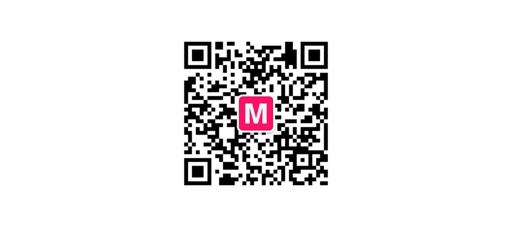

关于我们

成都模特网2012年成立于成都，虽成立不久却以快速平稳发展的状态下在成都模特经纪产业居领导地位。旗下拥有上千人优质国内外模特，卓越的专业团队。其业务范围舞美设计、公关策划、品牌推广等。并提供相关服务:秀场编导、舞台设计搭建、走秀模特、平面模特，礼仪、摄影师、化妆师、服装师、外籍模特、外籍舞蹈、外籍乐队、演员/主持、影音宣传片制作等一气呵成的完善服务。是成都及四川省内首屈一指的经纪公司。

我们是什么
我们专为促进模特产业而生，我们长期耕耘本土，期冀全新行业运作模式，推动模特圈变革。
我们创建时尚圈社交网,架构前所未有的开放平台。
品牌持有商、 广告公司、品牌管理咨询公司、商业策划机构、模特公司、模特经纪、
导演、制片、摄影机构、摄影师、造型师、传媒人、公关经理以及模特和艺人将在
这里实现真正的融合。各种资源自由分享交流，互动无阻。
我们做什么
我们专为促进模特产业而生，我们长期耕耘本土，期冀全新行业运作模式，推动模特圈变革。
我们创建时尚圈社交网,架构前所未有的开放平台。
品牌持有商、 广告公司、品牌管理咨询公司、商业策划机构、模特公司、模特经纪、
导演、制片、摄影机构、摄影师、造型师、传媒人、公关经理以及模特和艺人将在
这里实现真正的融合。各种资源自由分享交流，互动无阻。

我们需要你
我们专为促进模特产业而生，我们长期耕耘本土，期冀全新行业运作模式，推动模特圈变革。
我们创建时尚圈社交网,架构前所未有的开放平台。
品牌持有商、 广告公司、品牌管理咨询公司、商业策划机构、模特公司、模特经纪、
导演、制片、摄影机构、摄影师、造型师、传媒人、公关经理以及模特和艺人将在
这里实现真正的融合。各种资源自由分享交流，互动无阻。
业务范畴
1．各类车展、新闻发布会、产品推介会、产品展示会、招商会
2．各种活动开幕闭幕、项目开工竣工庆典、房地产开盘仪式；
3．大中型国际、国内会议、论坛、研讨会、经贸交流会、招商引资会、各种专业会展；
4．商务演艺公关活动和各种文化交流活动；
5．地方政府、企业、社团机构开展各种类型的宣传日、纪念日（周年庆典）、活动周等活动。